CASE FILE 04 · NOTIFYX · OPEN SOURCE
In production at 5 companiesI built notifications four times. Then I built NotifyX.
§1 CONTEXT
I was tired of solving the same problem inside every product.
Every app needed push notifications, scheduling, retries and delivery state. I kept rebuilding it. NotifyX is the version I can reuse everywhere.
It puts FCM, APNS, HMS and Web Push behind one API. The caller sends a message. NotifyX handles providers, queues, retries and delivery state. The code is public at github.com/awsdang/notifyx.
§2 THE CONSTRAINTS
- Four providers have different tokens, limits and failure behaviour. The caller should not care.
- Messages must never be silently lost: every message ends in an accountable state.
- Scheduled and immediate delivery through the same pipeline.
- Several products and companies share one deployment, so multi-tenancy existed from the start.
- Operations people need visibility without reading logs.
- A worker crash must not lose queued work. Ever.
§3 MY OWNERSHIP
- I built the API, workers and scheduler with Node.js, BullMQ, Redis, PostgreSQL and Prisma.
- I added retries with backoff and a dead-letter queue for permanent failures.
- I built the React dashboard so delivery state is visible without searching logs.
- I wrote SDKs for web, Flutter and React Native.
- I benchmarked and tuned it to about 150 messages per second per worker.
§4 SYSTEM MAP
API ─────────┐ (immediate) SCHEDULER ───┤ (timed campaigns) ▼ QUEUE · BullMQ / Redis (the source of truth) │ ▼ WORKERS 1..N (disposable · ~150 msg/s each) │ ├──▶ FCM (Android) ├──▶ APNS (iOS) ├──▶ HMS (Huawei) └──▶ WEB PUSH (browsers) │ failed ├──▶ RETRY (backoff) ──▶ back to the queue └──▶ DEAD-LETTER (permanent · kept for human inspection) │ delivery state ──▶ PostgreSQL ──▶ REACT DASHBOARD
§5 KEY DECISIONS
Token formats, payloads and rate limits belong inside the adapters. The caller only needs to say "send this."
Workers are disposable. If one dies in the middle of a batch, BullMQ gives the job to another worker. The crash loses nothing.
Invalid tokens are removed, timeouts retry with backoff and permanent failures go to a dead-letter lane a person can inspect.
The web SDK anchors devices to a client-managed external ID, so push-subscription rotations update one device record instead of creating ghosts.
§6 OUTCOME
Cardyiq, Sadeek, Asheerty, Orivo and Baseerah use NotifyX. It is now the default notification layer for the products I ship.
§7 FAILURE MODES, HANDLED
Retry with backoff; delivery state preserved through every attempt.
The dead token is removed so we do not keep sending to it.
The queue absorbs the burst; workers pace the drain.
BullMQ re-delivers the job to a healthy worker. No message lost.
Dead-letter lane with full context, waiting for a human.
§8 INSIDE THE PRODUCT
The interface behind the infrastructure.
Actual NotifyX portal captured locally with fictional apps, recipients, history, and provider status. These screens show the product interface, not a live delivery benchmark.
CLICK TO EXPLORE ↗

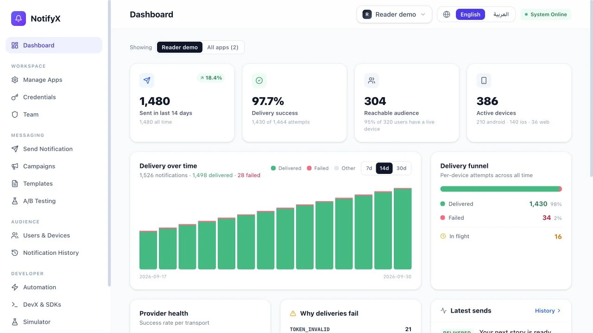
Delivery health, channel performance, and recent activity in one operational view.

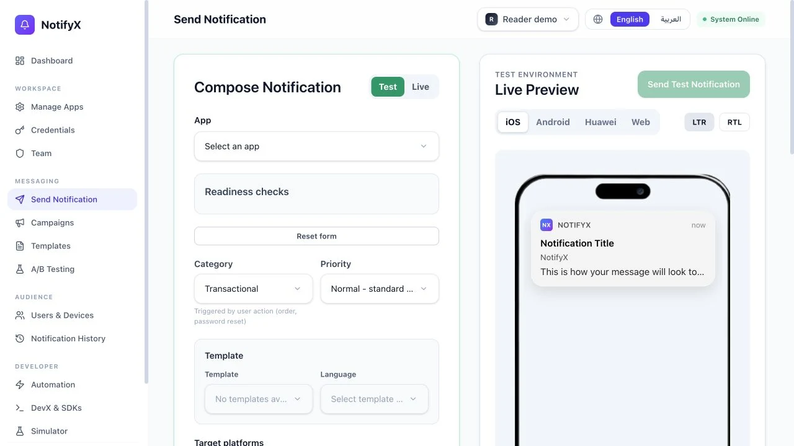
The real composer connects app, message, recipient, and preview.

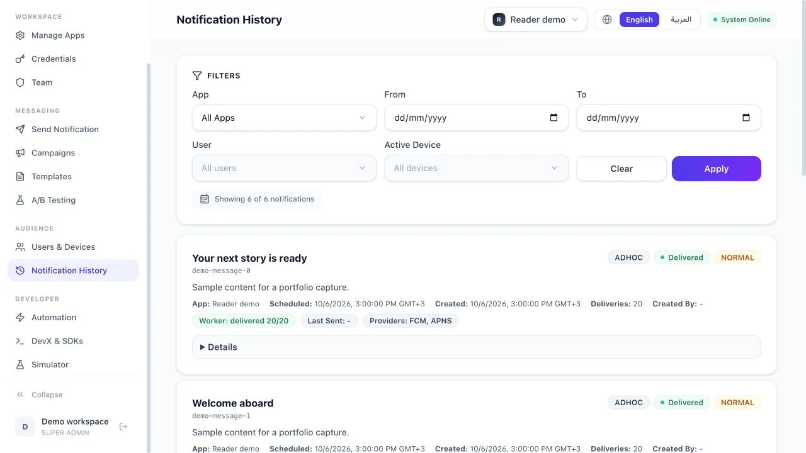
Operators can inspect delivery states and filter individual attempts.

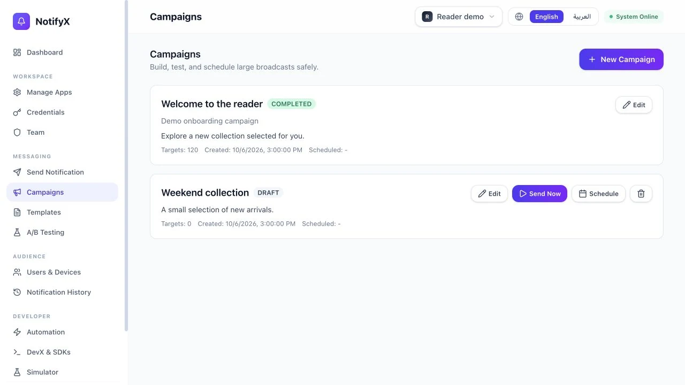
Campaigns have a separate place from transactional sends.

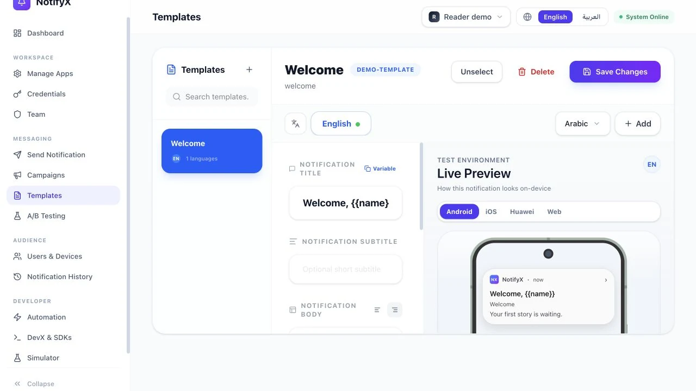
Localized templates keep message content reusable.

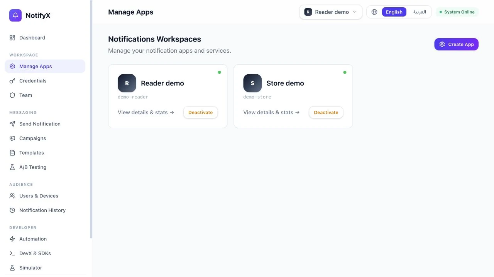
App-level configuration separates products sharing one platform.

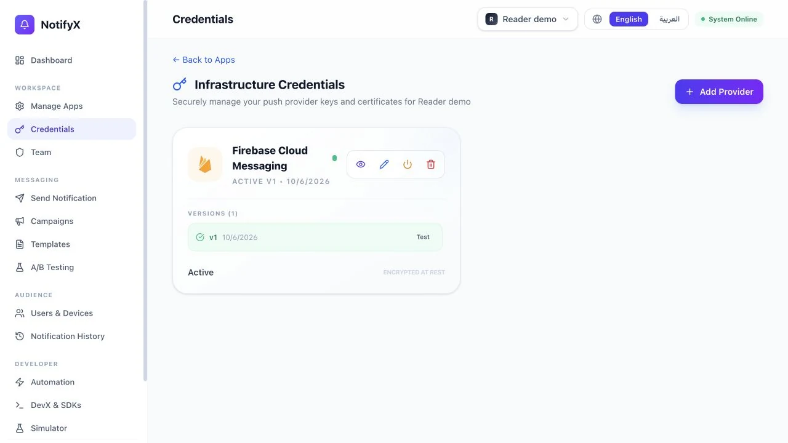
The provider interface exposes configuration status without exposing secret values.

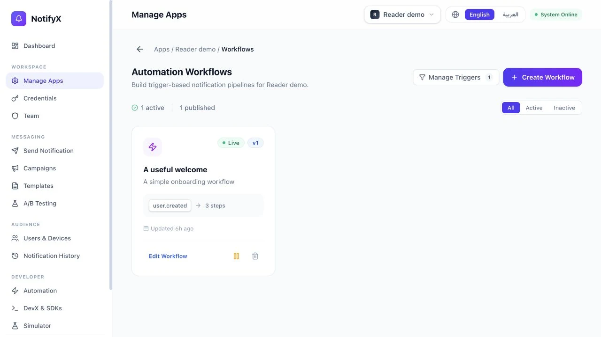
Event-driven flows live beside campaigns and transactional notifications.

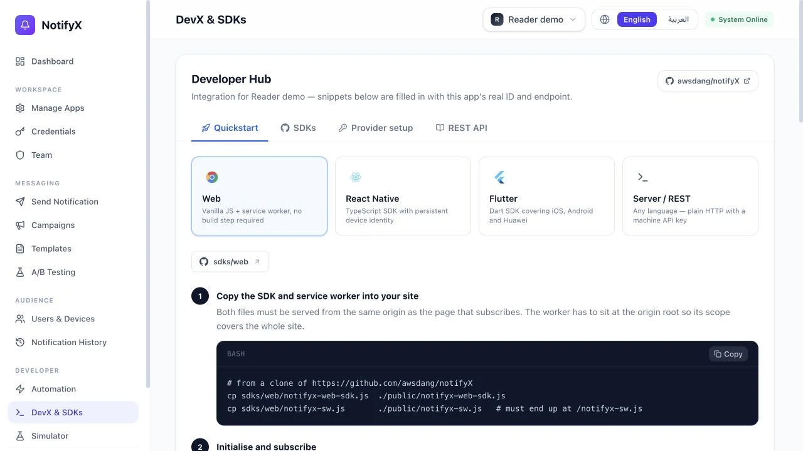
Integration documentation belongs inside the operational product.

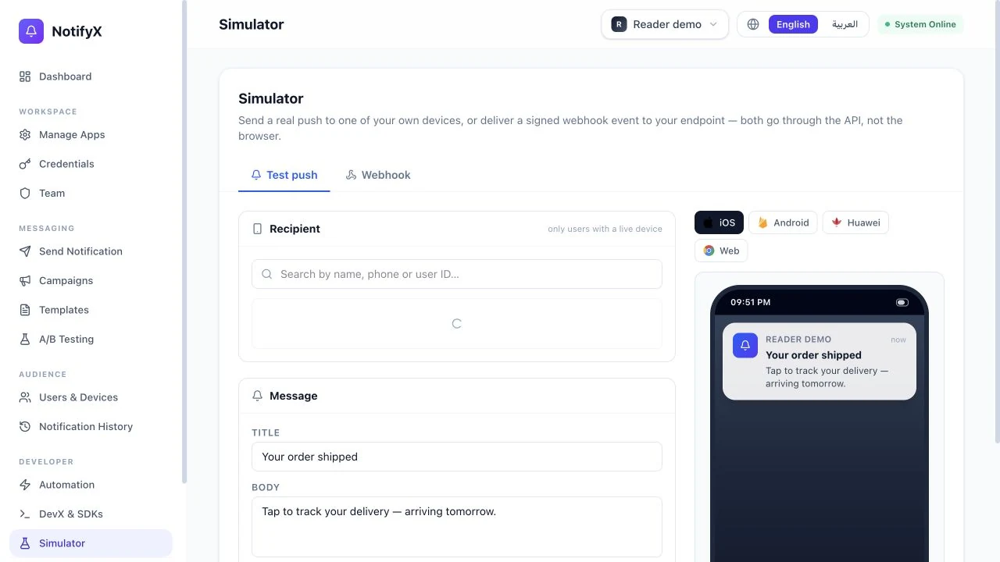
Developers can inspect SDK behavior before connecting a real client.

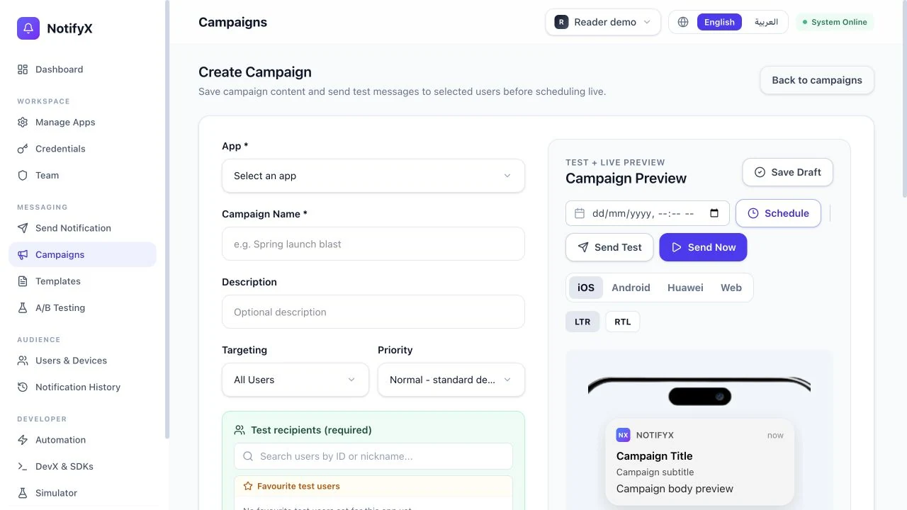
Scheduling, content, and targeting form one campaign workflow.

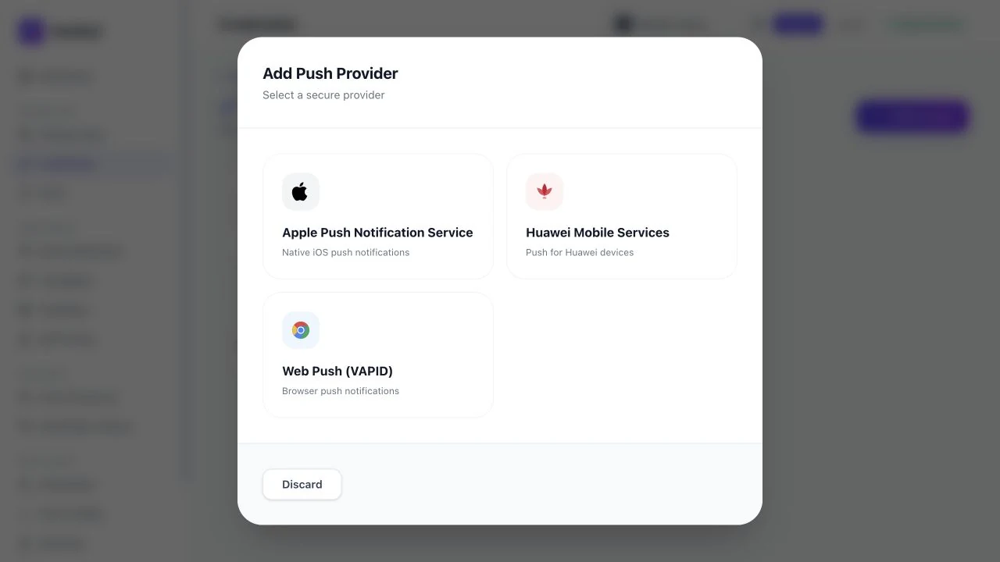
The provider picker makes supported integrations visible.
§9 WHAT I LEARNED
The success path is easy. I trust infrastructure when I know exactly what it does after something fails.
§10 WHAT I'D CHANGE TODAY
I would add per-tenant rate-limit budgets earlier so one company cannot slow down another. I would also define delivery receipts properly from the start. And I would open-source it on day one instead of extracting the public version later.